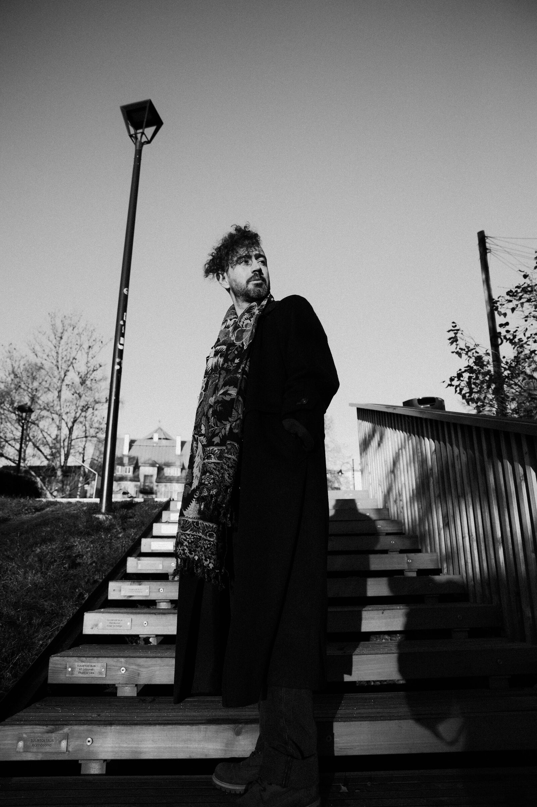
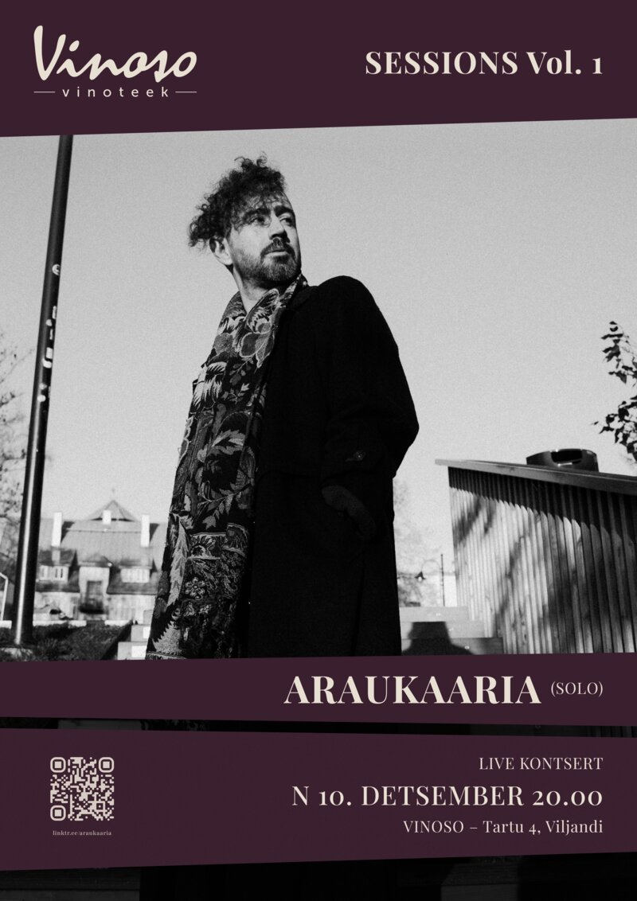
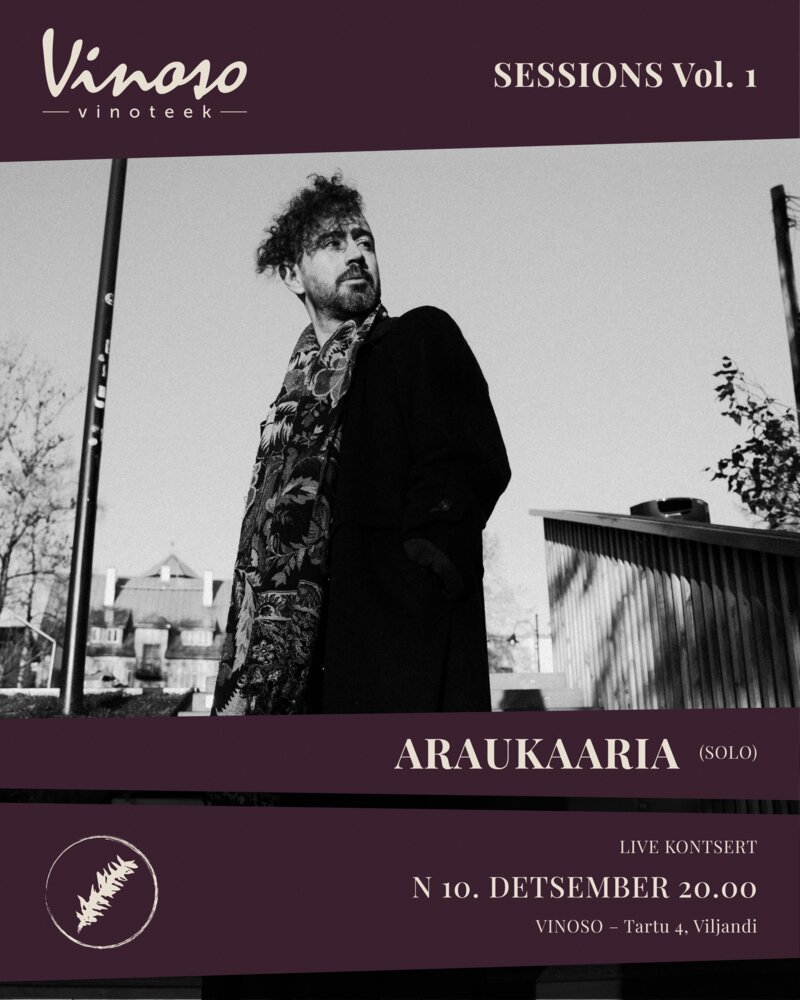

Araukaaria (soolo)Araukaaria (solo)
Vinoso Sessions Vol. 1
Soolo pressimappSolo press kit
Araukaaria (soolo): José „Pepi“ Prieto elavalt Vinoso Sessions Vol. 1 õhtul. Korraldajatele ja ajakirjanikele: tutvustus, kontserdi info ja fotod.
Muude küsimustega kirjuta aadressil .
Araukaaria (solo): José “Pepi” Prieto live at Vinoso Sessions Vol. 1. For promoters and press: bios, show info and photos.
Anything else, write to .
TutvustusBio
LühikeShort
Araukaaria José „Pepi“ Prieto esineb Vinosos soolo: bändi klassika ja uued lood akustilisel ja elektrikitarril ning vintage-orelil Yamaha Electone, lähedalt ja intiimselt.
Araukaaria’s José “Pepi” Prieto plays solo at Vinoso: band classics and new songs on acoustic and electric guitar and a vintage Yamaha Electone organ, up close and intimate.
PikkLong
José „Pepi“ Prieto on Buenos Airesest pärit laulukirjutaja ja produtsent, kes seisab Viljandi Argentina-Eesti psühhedeelse art-rock’i bändi Araukaaria taga. Ühel intiimsel õhtul Vinosos viib ta lood tagasi sinna, kust need alguse said: akustiline ja elektrikitarr jagavad lava tema vintage-oreliga Yamaha Electone B-205. Kõlavad Araukaaria lemmiklood lihtsaks riisutud kujul ning uued lood, mis on siin kuulda esimest korda, kõik juurtega Argentina rock nacional’is ja kerge folgihõnguga. See on lähedane ja soe kontsert, loodud hoolikalt valitud klaasi veini ja hea seltskonna jaoks.
José “Pepi” Prieto is the Buenos Aires-born songwriter and producer behind Araukaaria, the Argentine-Estonian psychedelic art rock band from Viljandi. For one intimate evening at Vinoso, he takes the songs back to where they started. Acoustic and electric guitar share the stage with his vintage Yamaha Electone B-205 organ. Expect Araukaaria favourites stripped to their core, alongside new songs heard here for the first time, all rooted in Argentine rock nacional with a touch of folk. It’s a close, warm set made for a curated glass of wine and good company.
KontsertShow
- SündmusEvent
- Vinoso Sessions Vol. 1
- AegDate
- Neljapäev, 10. detsember 2026 kell 20.00Thursday 10 December 2026, 20:00
- KohtVenue
- Vinoso vinoteek, Tartu 4, Viljandi
- LavalOn stage
- José „Pepi“ Prieto — vokaal, akustiline ja elektrikitarr, Yamaha Electone B-205José “Pepi” Prieto — vocals, acoustic and electric guitar, Yamaha Electone B-205
FotodPhotos
Vabalt kasutatav kontserdi kajastamiseks ja reklaamiks. Palun märgi ära fotograaf.
Free to use for press and promotion of the show. Please credit the photographer.
-
Laadi allaDownload
PressifotoPress photo
-

Laadi allaDownloadTrükiplakatPrint poster
-

Laadi allaDownloadIG / FB postitusIG / FB post